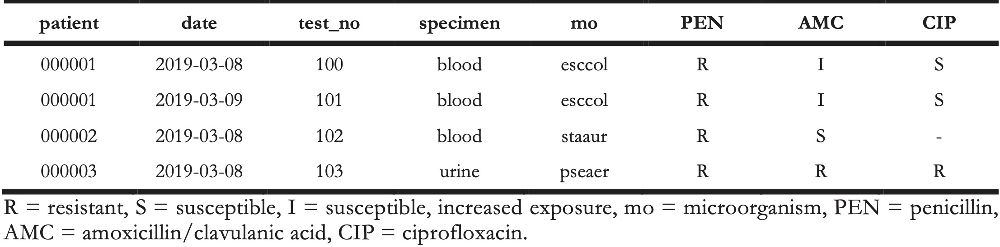
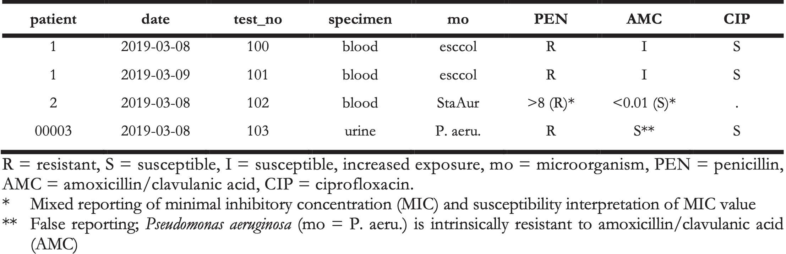
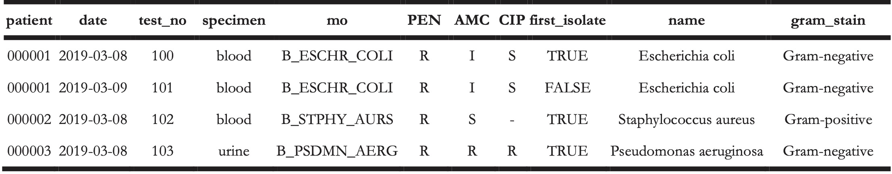
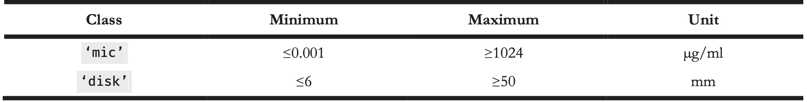
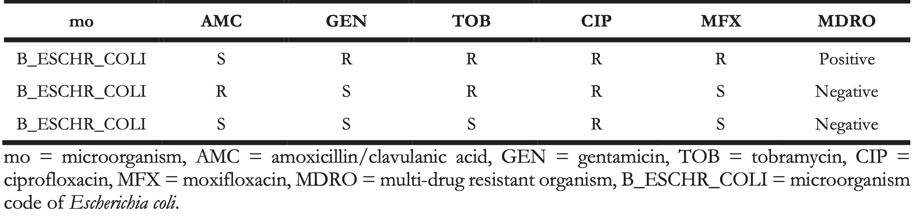
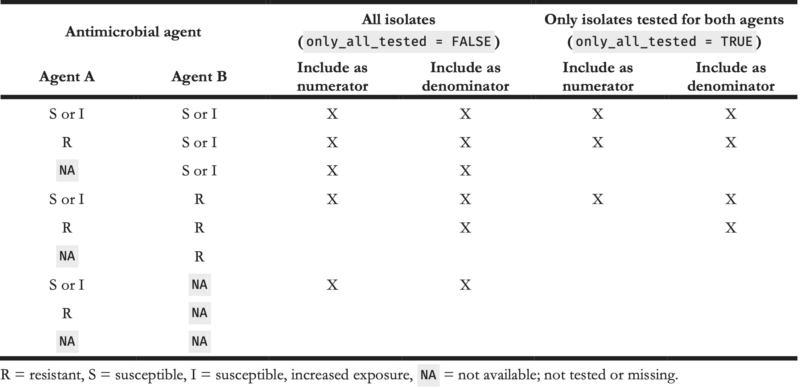

4 AMR - An R Package for Working with Antimicrobial Resistance Data
Accepted in Journal of Statistical Software (ahead of print)
Berends MS 1,2*, Luz CF 2*, Friedrich AW 2, Sinha BNM 2, Albers CJ 3, Glasner C 2
- Certe Medical Diagnostics and Advice Foundation, Groningen, the Netherlands
- University of Groningen, University Medical Center Groningen, Department of Medical Microbiology and Infection Prevention, Groningen, the Netherlands
- University of Groningen, Heymans Institute for Psychological Research, Groningen, the Netherlands
* These authors contributed equally
Abstract
Antimicrobial resistance is an increasing threat to global health. Evidence for this trend is generated in microbiological laboratories through testing microorganisms for resistance against antimicrobial agents. International standards and guidelines are in place for this process as well as for reporting data on (inter-)national levels. However, there is a gap in the availability of standardised and reproducible tools for working with laboratory data to produce the required reports. It is known that extensive efforts in data cleaning and validation are required when working with data from laboratory information systems. Furthermore, the global spread and relevance of antimicrobial resistance demands to incorporate international reference data in the analysis process. In this paper, we introduce the AMR package forR that aims at closing this gap by providing tools to simplify antimicrobial resistance data cleaning and analysis, while incorporating international guidelines and scientifically reliable reference data. The AMR package enables standardised and reproducible antimicrobial resistance analyses, including the application of evidence-based rules, determination of first isolates, translation of various codes for microorganisms and antimicrobial agents, determination of (multi-drug) resistant microorganisms, and calculation of antimicrobial resistance, prevalence and future trends. The AMR package works independently of any laboratory information system and provides several functions to integrate into international workflows (e.g., WHONET software provided by the World Health Organization).
4.1 Introduction
Antimicrobial resistance is a global health problem and of great concern for human medicine, veterinary medicine, and the environment alike. It is associated with significant burdens to both patients and health care systems. Current estimates show the immense dimensions we are already facing, such as claiming at least 50,000 lives due to antimicrobial resistance each year across Europe and the US alone [1]. Although estimates for the burden through antimicrobial resistance and their predictions are disputed [2] the rising trend is undeniable [3], thus calling for worldwide efforts on tackling this problem.
Surveillance programs and reliable data are key for controlling and streamlining these efforts. Surveillance data of antimicrobial resistance at higher levels (national or international) usually comprise aggregated numbers. The basis of this information is generated and stored at local microbiological laboratories where isolated microorganisms are tested for their susceptibility to a whole range of antimicrobial agents. The efficacy of these agents against microorganisms is nowadays interpreted as follows [4]:
- R (“resistant”) - there is a high likelihood of therapeutic failure;
- S (“susceptible, standard dosing regimen”) - there is a high likelihood of therapeutic success using a standard dosing regimen of an antimicrobial agent;
- I (“susceptible, increased exposure”) - there is a high likelihood of therapeutic success, but only when exposure to an antimicrobial agent is increased by adjusting the dosing regimen or its concentration at the site of infection.
Generally, antimicrobial resistance is defined as the proportion of resistant microorganisms (R) among all tested microorganisms of the same species (R + S + I). Today, the two major guideline institutes to define the international standards on antimicrobial resistance are the European Committee on Antimicrobial Susceptibility Testing (EUCAST) [5] and the Clinical and Laboratory Standards Institute (CLSI) [6]. The guidelines from these two institutes are adopted by 94% of all countries reporting antimicrobial resistance to the WHO [7].
Although these standardised guidelines are in place on the laboratory level for the data generation process, stored data in laboratory information systems are often not yet suitable for data analysis. Laboratory information systems are often designed to fit billing purposes rather than epidemiological data analysis. Furthermore, (inter-)national surveillance is hindered by inadequate standardisation of epidemiological definitions, different types of samples and data collection, settings included, microbiological testing methods (including susceptibility testing), and data sharing policies [8]. The necessity of accurate data analysis in the field of antimicrobial resistance has just recently been further underlined [9]. Antimicrobial resistance analyses require a thorough understanding of microbiological tests and their results, the biological taxonomy of microorganisms, the clinical and epidemiological relevance of the results, their pharmaceutical implications, and (inter-)national standards and guidelines for working with and reporting antimicrobial resistance.
Here, we describe the AMR package forR [10], which has been developed to standardise clean and reproducible antimicrobial resistance data analyses using international standardised recommendations [5,6] while incorporating scientifically reliable reference data about valid laboratory outcome, antimicrobial agents, and the complete biological taxonomy of microorganisms. The AMR package provides solutions and support for these aspects while being independent of underlying laboratory information systems, thereby democratising the analysis process. Developed inR and available on the ComprehensiveR Archive Network (CRAN) since February 22nd 2018 [11], the AMR package enables reproducible workflows as described in other fields, such as environmental science [12]. The AMR package provides a new technical instrument to aid in curbing the global threat of antimicrobial resistance. Furthermore, local, and regional data in the laboratories can now become relevant in any setting for public health.
While no other packagesR package with the purpose of dealing with antimicrobial resistance data are available on CRAN or Bioconductor, the AMR package may be integrated in workflows of related packages. For example, theR Epidemics Consortium (RECON) provides high-quality packages for data analysis in infectious disease outbreaks or epidemics (for example incidence and epicontacts) [13,14]. In addition, on the laboratory side the antibioticR package provides approaches to work with disc diffusion zone diameter and minimum inhibitory concentration data from environment samples [15]. We aim at providing a comprehensive and standardised toolbox for antimicrobial resistance data processing and analysis, with a focus on microbiological, clinical, and epidemiological purposes that was yet missing.
The following sections describe the functionality of the AMR package according to its core functionalities for transforming, enhancing, and analysing antimicrobial resistance data using scientifically reliable reference data.
4.2 Antimicrobial resistance data
Microbiological tests can be performed on different specimens, such as blood or urine samples or nasal swabs. After arrival at the microbiological laboratory, the specimens are traditionally cultured on specific media, such as blood agar. If a microorganism can be isolated from these media, it is tested against several antimicrobial agents. Based on the minimal inhibitory concentration (MIC) of the respective agent and interpretation guidelines, such as guidelines by EUCAST [5] and CLSI [6], test results are reported as “resistant” (R), “susceptible” (S) or “susceptible, increased exposure” (I). A typical data structure is illustrated in Table 1 [5].
Table 1. Example of an antimicrobial resistance report.

Table 2. Example of an antimicrobial resistance report.

The AMR package aims at providing a standardised and automated way of cleaning, transforming, and enhancing these typical data structures (Table 1 and 2), independent of the underlying data source. Processed data would be similar to Table 3 that highlights several package functionalities in the sections below.
Table 3. Enhanced antimicrobial resistance report example.

4.3 Antimicrobial resistance data transformation
4.3.1 Working with taxonomically valid microorganism names
Coercing is a computational process of forcing output based on an input. For microorganism names, coercing user input to taxonomically valid microorganism names is crucial to ensure correct interpretation and to enable grouping based on taxonomic properties. To this end, the AMR package includes all microbial entries from The Catalogue of Life (http://www.catalogueoflife.org), the most comprehensive and authoritative global index of species currently available [16]. It holds essential information on the names, relationships, and distributions of more than 1.9 million species. The integration of it into the AMR package is described in Appendix A.
The as.mo() function makes use of this underlying data to transform a vector of characters to a new class `‘mo’ of taxonomically valid microorganism name. The resulting values are microbial IDs, which are human-readable for the trained eye and contain information about the taxonomic kingdom, genus, species, and subspecies (Figure 1).
Figure 4.1: The structure of a typical microbial ID as used in the AMR package. An ID consists of two to four elements, separated by an underscore. The first element is the abbreviation of the taxonomic kingdom. The remaining elements consist of abbreviations of the lowest taxonomic levels of every microorganism: genus, species (if available) and subspecies (if available). Abbreviations used for the microbial IDs of microorganism names were created using the baseR function abbreviate().
The as.mo() function compares the user input with taxonomically valid microorganism names, rates the matching with a score and returns results based on the highest score. This matching score (\(m\)), ranging from \(0\) to \(1\), is calculated using the following equation:
\[m_{(x,n)} = \frac{l_{n} - 0.5 \cdot \min\{ l_n, \operatorname{lev}(x,n) \} }{l_{n} \cdot p_{n} \cdot k_{n}}\]
where:
- \(x\) is the user input;
- \(n\) is a taxonomic name (genus, species, and subspecies);
- \(l_n\) is the length of \(n\);
- lev is the Levenshtein distance function [17], which counts any insertion, deletion and substitution as \(1\) that is needed to change \(x\) into \(n\);
- \(p_n\) is the human pathogenic prevalence group of \(n\), as described below;
- \(k_n\) is the taxonomic kingdom of \(n\), set as Bacteria = 1, Fungi = 2, Protozoa = 3, Archaea = 4, others = 5.
The grouping into human pathogenic prevalence (\(p\)) is based on experience from several microbiological laboratories in the Netherlands in conjunction with international reports on pathogen prevalence [7,18,19]. Group 1 (most prevalent microorganisms) consists of all microorganisms where the taxonomic class is Gammaproteobacteria or where the taxonomic genus is Enterococcus, Staphylococcus or Streptococcus. This group consequently contains all common Gram-negative bacteria, such as Pseudomonas and Legionella and all species within the order Enterobacterales. Group 2 consists of all microorganisms where the taxonomic phylum is Proteobacteria, Firmicutes, Actinobacteria or Sarcomastigophora, or where the taxonomic genus is Absidia, Acremonium, Actinotignum, Alternaria, Anaerosalibacter, Apophysomyces, Arachnia, Aspergillus, Aureobacterium, Aureobasidium, Bacteroides, Basidiobolus, Beauveria, Blastocystis, Branhamella, Calymmatobacterium, Candida, Capnocytophaga, Catabacter, Chaetomium, Chryseobacterium, Chryseomonas, Chrysonilia, Cladophialophora, Cladosporium, Conidiobolus, Cryptococcus, Curvularia, Exophiala, Exserohilum, Flavobacterium, Fonsecaea, Fusarium, Fusobacterium, Hendersonula, Hypomyces, Koserella, Lelliottia, Leptosphaeria, Leptotrichia, Malassezia, Malbranchea, Mortierella, Mucor, Mycocentrospora, Mycoplasma, Nectria, Ochroconis, Oidiodendron, Phoma, Piedraia, Pithomyces, Pityrosporum, Prevotella, Pseudallescheria, Rhizomucor, Rhizopus, Rhodotorula, Scolecobasidium, Scopulariopsis, Scytalidium, Sporobolomyces, Stachybotrys, Stomatococcus, Treponema, Trichoderma, Trichophyton, Trichosporon, Tritirachium or Ureaplasma. Group 3 consists of all other microorganisms.
This will lead to the effect that e.g., "E. coli" will return the microbial ID of Escherichia coli (\(m = 0.688\), a highly prevalent microorganism found in humans) and not Entamoeba coli (\(m = 0.079\), a less prevalent microorganism in humans), although the latter would alphabetically come first. The matching score function is for users available as mo_matching_score().
If any coercion rules are applied, a warning is printed to the console and scores can be reviewed by calling mo_uncertainties(), that prints all other matches with their matching scores. Users can furthermore control the coercion rules by setting the allow_uncertain argument in the as.mo() function. The following values or levels can be used:
0: no additional rules are applied;1: allow previously accepted (but now invalid) taxonomic names and minor spelling errors;2: allow all of 1, strip values between brackets, inverse the words of the input, strip off text elements from the end keeping at least two elements;3: allow all of level 1 and 2, strip off text elements from the end, allow any part of a taxonomic name;TRUE(default): equivalent to2;FALSE: equivalent to0.
To support organisation specific microbial IDs, users can specify a custom reference ‘data.frame’, by using as.mo(..., reference_df = ...). This process can also be automated by users with the set_mo_source() function.
4.3.1.1 Properties of microorganisms
The package contains functions to return a specific (taxonomic) property of a microorganism from the microorganisms data set (see Appendix A). Functions that start with mo_* can be used to retrieve the most recently defined taxonomic properties of any microorganism quickly and conveniently. These functions rely on the as.mo() function internally: mo_name(), mo_fullname(), mo_shortname(), mo_subspecies(), mo_species(), mo_genus(), mo_family(), mo_order(), mo_class(), mo_phylum(), mo_kingdom(), mo_type(), mo_gramstain(), mo_ref(), mo_authors(), mo_year(), mo_rank(), mo_taxonomy(), mo_synonyms(), mo_info() and mo_url(). Determination of the Gram stain, by using mo_gramstain(), is based on the taxonomic subkingdom and phylum. According to Cavalier-Smith [20], who defined the subkingdoms Negibacteria and Posibacteria, only the following phyla are Posibacteria: Actinobacteria, Chloroflexi, Firmicutes and Tenericutes. Bacteria from these phyla are considered Gram-positive - all other bacteria are considered Gram-negative. Gram stains are only relevant for species within the kingdom of Bacteria. For species outside this kingdom, mo_gramstain() will return NA.
4.3.2 Working with antimicrobial names or codes
The AMR package includes the antibiotics data set, which comprises common laboratory information system codes, official names, ATC (Anatomical Therapeutic Chemical) codes, defined daily doses (DDD) and more than 5,000 trade names of 456 antimicrobial agents (see Appendix A). The ATC code system and the reference list for DDDs have been developed and made available by the World Health Organization Collaborating Centre for Drug Statistics Methodology (WHOCC) to standardise pharmaceutical classifications [21]. All agents in the antibiotics data set have a unique antimicrobial ID, which is based on abbreviations used by the European Antimicrobial Resistance Surveillance Network (EARS-Net), the largest publicly funded system for antimicrobial resistance surveillance in Europe [22]. Furthermore, the AMR package includes the antivirals data seta containing antiviral agents, which is also described in Appendix A.
4.3.2.1 Properties of antimicrobial agents
It is a common task in microbiological data analyses (and other clinical or epidemiological fields) to work with different antimicrobial agents. The AMR package provides several functions to translate inputs such as ATC codes, abbreviations, or names in any direction. Using as.ab(), any input will be transformed to an antimicrobial ID of class ‘ab’. Helper functions are available to get specific properties of antimicrobial IDs, such as ab_name() for getting the official name, ab_atc() for the ATC code, or ab_cid() for the CID (Compound ID) used by PubChem [23]. Trade names can be also used as input. For example, the input values “Amoxil,” “dispermox,” “amox” and “J01CA04” all return the ID of amoxicillin (AMX):
as.ab("Amoxicillin")
#> Class <ab>
#> [1] AMX
as.ab(c("Amoxil", "dispermox", "amox", "J01CA04"))
#> Class <ab>
#> [1] AMX AMX AMX AMX
ab_name("Amoxil")
#> [1] "Amoxicillin"
ab_atc("amox")
#> [1] "J01CA04"
ab_name("J01CA04")
#> [1] "Amoxicillin"If more than one antimicrobial agent is found in the input string, a warning with the additional findings is printed to the console.
4.3.2.2 Filtering data based on classes of antimicrobial agents
The application of the ATC classification system also enables grouping of antimicrobial agents for data analyses. Data sets with microbial isolates can be filtered on isolates with specific results for tested antimicrobial agents in a specific antimicrobial class. For example, using filter_carbapenems(result = "R") returns data of all isolates with tested resistance to any of the 14 available antimicrobial agents in in the group of carbapenems according to the antibiotics data set.
4.3.3 Working with antimicrobial susceptibility test results
Minimal inhibitory concentrations (MIC) are susceptibility test results measured by microbiological laboratory equipment to determine at which minimum antimicrobial drug concentration 99.9% of a microorganism is inhibited in growth. These concentrations are often capped at a minimum and maximum, for example ≤0.02 µg/ml and ≥32 µg/ml, respectively. The ‘mic’ class, an ordered ‘factor’ containing valid MIC values, keeps these operators while still ordering all possible outcomes correctly so that e.g., “<=0.02” will be considered lower than “0.04.”
Another susceptibility testing method is the use of drug diffusion disks, which are small tablets containing a specified concentration of an antimicrobial agent. These disks are applied onto a solid growth medium or a specific agar plate. After 24 hours of incubation, the diameter of the growth inhibition around a disk can be measured in millimetres with a ruler. The ‘disk’ class can be used to clean these kinds of measurements, since they should always be valid numeric values between 6 and 50. The supported minima and maxima of valid values for both classes, ‘mic’ and ‘disk’, are displayed in Table 4.
Table 4. Antimicrobial susceptibility test classes.

The higher the MIC or the smaller the growth inhibition diameter, the more active substance of an antimicrobial agent is needed to inhibit cell growth, i.e. the higher the antimicrobial resistance against the tested antimicrobial agent. At high MICs and small diameters, guidelines interpret the microorganism as “resistant” (R) to the tested antimicrobial agent. At low MICs and wide diameters, guidelines interpret the microorganism as “susceptible” (S) to the tested antimicrobial agent. In between, the microorganism is classified as “susceptible, increased exposure” (I). For these three interpretations the ‘rsi’ class has been developed. When using as.rsi() on MIC values (of class ‘mic’) or disk diffusion diameters (of class ‘disk’), the values will be interpreted according to the guidelines from the CLSI or EUCAST (all guidelines between 2011 and 2020 are included in the AMR package) [24,25]. Guidelines can be changed by setting the guidelines argument.
# Low MIC value
as.rsi(as.mic(2), "E. coli", "ampicillin", guideline = "EUCAST 2020")
#> Class <rsi>
#> [1] S
# High MIC value
as.rsi(as.mic(32), "E. coli", "ampicillin", guideline = "EUCAST 2020")
#> Class <rsi>
#> [1] RWhen using the as.rsi() function on existing antimicrobial interpretations, it tries to coerce the input to the values “R,” “S” or “I.” These values can in turn be used to calculate the proportion of antimicrobial resistance.
4.3.4 Interpretative rules by EUCAST
Next to supplying guidelines to interpret raw MIC values, EUCAST has developed a set of expert rules to assist clinical microbiologists in the interpretation and reporting of antimicrobial susceptibility tests [5]. The rules comprise assistance on intrinsic resistance, exceptional phenotypes, and interpretive rules. The AMR package covers intrinsic resistant and interpretive rules for data transformation and standardisation purposes. The first prevents false susceptibility reporting by providing a list of organisms with known intrinsic resistance to specific antimicrobial agents (e.g., cephalosporin resistance of all enterococci). Interpretative rules apply inference from established resistance mechanisms [26-29]. Both groups of rules are based on classic IF THEN statements (e.g., IF Enterococcus spp. resistant to ampicillin THEN also report as resistant to imipenem). Some rules provide assistance for further actions when certain resistance has been detected, i.e., performing additional testing of the isolated microorganism. The AMR package function eucast_rules() can apply all EUCAST rules that do not rely on additional clinical information, such as additional information on patients’ diagnoses. Table 2 and 3 highlight the transformation for the reporting of AMX = S in patient_id = 000003 to the correct report according to EUCAST rules of AMX = R. Of note, however, EUCAST rules overwrite original data to correct for the difference in how antimicrobial agents affect the tested microorganism in vitro (in the laboratory) and in vivo (in the human body). This requires users to closely collaborate with the data source provider to ensure correct versioning, backward compatibility, reproducibility, and taking into account specific local regulation for resistance reporting. Typical scenarios where changes to the original data points apply include in vitro test results indicating susceptibility when resistance in vivo is known. The changes are based on scientific consensus to ensure reliable high-quality reporting of antimicrobial susceptibility results. All changes to the data are printed to the console and can also be reviewed in detail by setting the argument eucast_rules(..., verbose = TRUE).
EUCAST rules are subject to regular updates which are implemented into the AMR package by the AMR maintenance team shortly after publication. The eucast_rules() function supports versioning of the rules. The arguments version_breakpoints and version_expertrules can be set to current or previous versions. By default, the eucast_rules() function uses the latest implemented version.
4.3.5 Working with defined daily doses (DDD)
DDDs are essential for standardising antimicrobial consumption analysis, for inter-institutional or international comparison. The official DDDs are published by the WHOCC [36]. Updates to the official publication are monitored by the AMR maintenance team and implemented in the antibiotics data set included in the AMR package. Other metrics exist such as the recommended daily dose (RDD) or the prescribed daily dose (PDD). However, DDDs are the only metric that is independent of a patient’s disease and therapeutic choices and thus suitable for the AMR package.
Functions from the atc_online_*() family take any text as input that can be coerced with as.ab() (i.e., to class ‘ab’). Next, the functions access the WHOCC online registry [30] (internet connection required) and download the property defined in the arguments (e.g., administration = “O” or administration = “P” for oral or parenteral administration and property = “ddd” or property = “groups” to get DDD or the group of the selected antimicrobial defined by its ATC code).
atc_online_ddd("amoxicillin", administration = "O")
#> [1] 1.5
atc_online_groups("amoxicillin")
#> [1] "ANTIINFECTIVES FOR SYSTEMIC USE"
#> [2] "ANTIBACTERIALS FOR SYSTEMIC USE"
#> [3] "BETA-LACTAM ANTIBACTERIALS, PENICILLINS"
#> [4] "Penicillins with extended spectrum"4.4 Enhancing antimicrobial resistance data
4.4.1 Determining first isolates
Determining antimicrobial resistance or susceptibility can be done for a single agent (mono- therapy) or multiple agents (combination therapy). The calculation of antimicrobial resistance statistics is dependent on two prerequisites: the data should only comprise the first isolates and a minimum required number of 30 isolates should be met for every stratum in further analysis [6].
An isolate is a microorganism strain cultivated on specified growth media in a laboratory, so its phenotype can be determined. First isolates are isolates of any species found first in a patient per episode, regardless of the body site or the type of specimen (such as blood or urine) [6]. The selection on first isolates (using function first_isolate()) is important to prevent selection bias, as it would lead to overestimated or underestimated resistance to an antimicrobial agent. For example, if a patient is admitted with a multi-drug resistant microorganism and that microorganism is found in five different blood cultures the following week, it would overestimate resistance if all isolates were to be included in the analysis.
The episode in days can be set with the argument episode_days, which defaults to 365 as suggested by the CLSI guideline [6].
4.4.2 Determining multi-drug resistant organisms (MDRO)
Definitions of multi-drug resistant organisms (MDRO) are regulated by national and international expert groups and differ between nations. The AMR package provides the functionality to quickly identify MDROs in a data set using the mdro() function. Guidelines can be set with the argument guideline. At default, it applies the guideline as proposed by Magiorakos et al. [31]. Their work describes the definitions for bacteria being ‘MDR’ (multi-drug-resistant), ‘XDR’ (extensively drug-resistant) or ‘PDR’ (pan-drug-resistant). These definitions are widely adopted [32] and known in the field of medical microbiology.
Other guidelines currently supported are the international EUCAST guideline (guideline = “EUCAST” [33]), the international WHO guideline on the management of drug-resistant tuberculosis (guideline = “TB” [34]), and the national guidelines of The Netherlands (guideline = “NL” [35]), and Germany (guideline = “DE” [36]).
Some guidelines require a minimum availability of tested antimicrobial agents per isolate. This is needed to prevent false-negatives, since no reliable determination can be performed on only a few test results. This required minimum defaults to 50%, but can be set by the user with the pct_minimum_classes. Isolates that do not meet this requirement will be skipped for determination and will return NA (not applicable), with an informative warning printed to the console.
The rules are applied per row of the data. The mdro() function automatically identifies the variables containing the microorganism codes and antimicrobial agents based on the guess_ab_col() function. Following the guideline set by the user, it analyses the specific antimicrobial resistance of a microorganism and flags that microorganism accordingly. The outcome is demonstrated in Table 5, where the first row is an MDRO according to the Dutch guidelines [35].
Table 5. Example of a multi-drug resistant organism (MDRO) in a data set identified by applying Dutch guidelines.

4.4.2.1 Multi-drug resistant tuberculosis
Tuberculosis is a major threat to global health caused by Mycobacterium tuberculosis (MTB) and is one of the top ten causes of death worldwide [37]. Exceptional antimicrobial resistance in MTB is therefore of special interest. To this end, the international WHO guideline for the classification of drug resistance in MTB [34] is included in the AMR package. The mdr_tb() function is a convenient wrapper around mdro(..., guideline = "TB"), which returns an other ordered ‘factor’ than other mdro() functions. The output will contain the ‘factor’ levels ‘Negative’ < ‘Mono-resistant’ < ‘Poly-resistant’ < ‘Multi-drug-resistant’ < ‘Extensively drug-resistant’, following the WHO guideline.
4.5 Analysing antimicrobial resistance data
4.5.1 Calculation of antimicrobial resistance
The AMR package contains several functions for fast and simple resistance calculations of bacterial or fungal isolates. A minimum number of available isolates is needed for the reliability of the outcome. The CLSI guideline suggests a minimum of 30 available first isolates irrespective of the type of statistical analysis [6]. Therefore, this number is used as the default setting for any function in the package that calculates antimicrobial resistance or susceptibility, which can be changed with the minimum argument in all applicable functions.
4.5.1.1 Counts
The AMR package relies on the concept of tidy data [38], although not strictly following its rules (one row per test rather than one row per observation). Function names to calculate the number of available isolates follow these general resistance interpretation standards with count_S(), count_I(), and count_R() respectively. Combinations of antimicrobial resistance interpretations can be counted with count_SI() and count_IR(). All these functions take a vector of interpretations of the class ‘rsi’ (as discussed above) or are internally transformed with as.rsi(). The returned value is the sum of the respective interpretation in the selected test column. All count_*() functions support quasi-quotation with pipes, grouped variables, and can be used with dplyr::summarise() [39].
4.5.1.2 Proportions
Calculation of antimicrobial resistance is carried out by counting the number of first resistant isolates (interpretation of “R”) and dividing it by the number of all first isolates, see Equation 2. This is implemented in the proportion_R() function. To calculate antimicrobial susceptibility, the number of susceptible first isolates (interpretation of “S” and “I”) has to be counted and divided by the number of all first isolates, which is implemented in the proportion_SI() function. For convenience, the resistance() function is an alias of the proportion_R() function, and the susceptibility() function is an alias of the proportion_SI() function.
The functions proportion_R(), proportion_IR(), proportion_I(), proportion_SI(), and proportion_S() follow the same logic as the count_*() functions and all return a vector of class ‘double’ with a value between 0 and 1. The argument minimum defines the minimal allowed number of available (tested) isolates (default: minimum = 30). Any number below the set minimum will return NA with a warning.
For calculating the proportion (\(P\)) of antimicrobial resistance or susceptibility to one antimicrobial agent, the following equation is used:
\[P_{(x, o)} = \frac{\sum_{i=1}^k [x_i \in o]}{\sum_{i=1}^k [x_i \in \{R,S,I\}]}\]
where \(P\) is the proportion of outcome \(o\) (that is either “R,” “S,” “I,” or a combination of two of them), where \(x\) is a character vector of length \(k\) only consisting of values “R,” “S,” or “I” and \([x_i \in o]\) is the indicator function, returning \(1\) if the indicator function is true and \(0\) otherwise. The denominator must include the collection \(\{R,S,I\}\) so that ’wrong’ elements in \(x\) (i.e., elements not being “R,” “S,” or “I”) will not be counted. Thus, the theoretical antimicrobial susceptibility of the vector \(x = \{S,S,I,R,R\}\) is:
\[P_{(x, o = \{S, I\})} = \frac{3}{5} = 0.6\]
For the proportion of empiric susceptibility (\(s\)) for more than one antimicrobial agent, the calculation can be carried out in two ways (Table 6).
Table 6. Example calculation for determining empiric susceptibility (%SI) for more than one antimicrobial agent.

The first method is to count the total number of first isolates where at least one agent was tested as “S” or “I” and divide it by the number of first isolates tested where any of the agents was tested (Equation 4). This method will be used when setting only_all_tested = FALSE in the susceptibility() function:
\[s_{(x, y)} = \frac{\sum_{i=1}^k [x_i \in \{S,I\} \lor y_i \in \{S,I\}]}{\sum_{i=1}^k [x_i \in \{R,S,I\} \lor y_i \in \{R,S,I\}]}\]
where \(x\) is a character vector only consisting of values “R,” “S,” or “I” (i.e., ’agent A’) and \(y\) is another character vector only consisting of values “R,” “S,” or “I” (i.e., ’agent B’).
The second method is to count the total number of first isolates where at least one agent was tested as “S” or “I” and where all agents were tested divided by the number of first isolates tested where all of the agents were tested (Equation 5). This method will be used when setting only_all_tested = TRUE in the susceptibility() function:
\[s'_{(x, y)} = \frac{\sum_{i=1}^k [(x_i \in \{S,I\} \lor y_i \in \{S,I\}) \, \land x_i \in \{R,S,I\} \land y_i \in \{R,S,I\}]}{\sum_{i=1}^k [x_i \in \{R,S,I\} \land y_i \in \{R,S,I\}]}\]
Based on Equation 2, the overall resistance and susceptibility of antimicrobial agents like gentamicin (GEN) and amoxicillin (AMX) can be calculated using the following syntax. The example_isolates data set is an example data set included in the AMR package, see Appendix A. The n_rsi() function is analogous to the n() function of the dplyr package. It counts the number of available isolates, but only includes observations with valid antimicrobial results (i.e., “R,” “S,” or “I”):
library("dplyr")
example_isolates %>%
summarise(r_gen = proportion_R(GEN),
r_amx = proportion_R(AMX),
n_gen = n_rsi(GEN),
n_amx = n_rsi(AMX),
n_total = n())
#> r_gen r_amx n_gen n_amx n_total
#> [1] 0.2458221 0.5955556 1855 1350 2000This output reads: the resistance to gentamicin of all isolates in the example_isolates data set is \(P{(x = GEN, o = \{R\})} = 24.6\%\), based on \(1855\) out of \(2000\) available isolates. This means that the susceptibility is \(P{(x = GEN, o = \{S,I\})} = 75.4\%\). The susceptibility to amoxicillin is \(P{(x = AMX, o = \{S,I\})} = 40.4\%\) based on \(1350\) isolates.
To calculate the effect of combination therapy, i.e., treating patients with multiple agents at the same time, all proportion_*() functions can handle multiple variables as arguments as defined in Equation 4 and 5. For example, to calculate the empiric susceptibility of a combination therapy comprising gentamicin (GEN) and amoxicillin (AMX):
example_isolates %>%
summarise(si_gen_amx = proportion_SI(GEN, AMX),
n_gen_amx = n_rsi(GEN, AMX),
n_total = n())
#> si_gen_amx n_gen_amx n_total
#> [1] 0.931843 1921 2000This leads to the conclusion that combining gentamicin with amoxicillin would cover \(s{(x = GEN, y = AMX)} = 93.2\%\) based on \(1921\) out of \(2000\) available isolates, which is \(17.8\%\) more than when treating with gentamicin alone (\(P{(x = GEN, o = \{S,I\})} = 75.4\%\)). With these functions, exact calculations can be done to evaluate the empiric success of treating infections with one or more antimicrobial agents.
4.6 Design decisions
The AMR package follows the rationale of tidyverse packages as authored by Wickham et al. [40]. Most functions take a ‘data.frame’ or ‘tibble’ as input, support piping (%>%) operations, can work with quasi-quotations, and can be integrated into dplyr workflows, such as mutate() to create new variables and group_by() to group by variables. Although the AMR package integrates well into tidyverse workflows, it can also be used with base Ronly. To this extent, the AMR package was developed to be independent of any other Rpackage to ensure and maintain sustainability.
The AMR package supports multiple languages. Currently supported languages are English, Dutch, French, German, Italian, Portuguese, and Spanish. The system language will be used if the language is supported but can be overwritten with options(AMR_locale = ...). Multi-language support affects language-dependent output of functions such as mo_name(), mo_gramstain(), mo_type(), and ab_name().
The AMR package uses S3 classes, object oriented (OO) systems available in R. They allow different types of output based on the user input. The AMR package introduces 5 S3 classes (‘mo’, ‘ab’, ‘rsi’, ‘mic’, and ‘disk’) to increase the convenience when working with antimicrobial susceptibility data.
4.7 Reproducible example
We consider the problem of working with antimicrobial resistance data from three different hospitals between 2011-01-01 and 2020-01-01. After loading the AMR package and additional tidyverse packages to allow transformation and plotting, we load the example_isolates_unclean example data from the AMR package into the global environment and assign it a new name.
library("dplyr")
library("tidyr")
library("AMR")
options(AMR_locale = "en")
data <- example_isolates_unclean
glimpse(data)
#> Rows: 3,000
#> Columns: 8
#> $ patient_id <chr> "J3", "R7", "P3", "P10", "B7", "W3", "J8", "M3",…
#> $ hospital <chr> "A", "A", "A", "A", "A", "A", "A", "A", "A", "A"…
#> $ date <date> 2012-11-21, 2018-04-03, 2014-09-19, 2015-12-10,…
#> $ bacteria <chr> "E. coli", "K. pneumoniae", "E. coli", "E. coli"…
#> $ AMX <chr> "R", "R", "R", "S", "S", "R", "R", "R", "S", "S"…
#> $ AMC <chr> "I", "I", "S", "I", "S", "S", "S", "S", "S", "S"…
#> $ CIP <chr> "S", "S", "S", "S", "S", "R", "S", "S", "S", "S"…
#> $ GEN <chr> "S", "S", "S", "S", "S", "S", "S", "S", "S", "S"…
unique(data$hospital)
#> [1] "A" "B" "C"
unique(data$bacteria)
#> [1] "E. coli" "K. pneumoniae"
#> [3] "S. aureus" "S. pneumoniae"
#> [5] "klepne" "strpne"
#> [7] "esccol" "staaur"
#> [9] "Escherichia coli" "Staphylococcus aureus"
#> [11] "Streptococcus pneumoniae" "Klebsiella pneumoniae"
data %>%
count(bacteria)
#> bacteria n
#> 1 E. coli 494
#> 2 esccol 508
#> 3 Escherichia coli 516
#> 4 K. pneumoniae 108
#> 5 Klebsiella pneumoniae 102
#> 6 klepne 116
#> 7 S. aureus 247
#> 8 S. pneumoniae 151
#> 9 staaur 240
#> 10 Staphylococcus aureus 243
#> 11 Streptococcus pneumoniae 139
#> 12 strpne 136The data contains 3,000 observations of 8 variables from 3 hospitals. The “bacteria” variable comprises 12 unique elements. However, they appear to encode the same information in different formats (’E. coli’, ’K. pneumoniae’, ’S. aureus’, ’S. pneumoniae’, ’klepne’, ’strpne’, ’esccol’, ’staaur’, ’Escherichia coli’, ’Staphylococcus aureus’, ’Streptococcus pneumoniae’, ’Klebsiella pneumoniae’). We can use the as.mo() function to standardise the bacterial codes and add a variable with the official scientific name. The correct transformation of the bacterial codes can be reviewed by calling the mo_uncertainties() function.
data <- data %>%
mutate(bacteria = as.mo(bacteria),
bacteria_name = mo_name(bacteria))
mo_uncertainties()
#> "E. coli" -> Escherichia coli (B_ESCHR_COLI, matching score =
#> 0.688)
#> Also matched: Entamoeba coli (0.079)
#> "K. pneumoniae" -> Klebsiella pneumoniae (B_KLBSL_PNMN, matching
#> score = 0.786)
#> Also matched: Klebsiella pneumoniae ozaenae
#> (0.707), Klebsiella pneumoniae rhinoscleromatis
#> (0.658)
#>
#> "S. aureus" -> Staphylococcus aureus (B_STPHY_AURS, matching score
#> = 0.690)
#> Also matched: Staphylococcus aureus anaerobius
#> (0.625), Streptomyces aureus (0.355), Stentor aureus
#> (0.052)
data %>%
count(bacteria, bacteria_name)
#> bacteria bacteria_name n
#> 1 B_ESCHR_COLI Escherichia coli 1518
#> 2 B_KLBSL_PNMN Klebsiella pneumoniae 326
#> 3 B_STPHY_AURS Staphylococcus aureus 730
#> 4 B_STRPT_PNMN Streptococcus pneumoniae 426In a next step, we can further enrich the data with additional microbial taxonomic data based on the “bacteria” variable, such as Gram-stain and microorganism family.
data <- data %>%
mutate(gram_stain = mo_gramstain(bacteria),
family = mo_family(bacteria))
data %>%
count(gram_stain)
#> gram_stain n
#> 1 Gram-negative 1844
#> 2 Gram-positive 1156
data %>%
count(family)
#> family n
#> 1 Enterobacteriaceae 1844
#> 2 Staphylococcaceae 730
#> 3 Streptococcaceae 426The variables “AMX,” “AMC,” “CIP,” and “GEN” contain antimicrobial susceptibility test results. The abbreviations stand for the tested antimicrobial agent. The official names and additional information about the antimicrobial agents can be checked with the ab_info() function from the AMR package.
ab_info("AMX")
#> $ab
#> [1] "AMX"
#>
#> $atc
#> [1] "J01CA04"
#>
#> $cid
#> [1] 33613
#>
#> $name
#> [1] "Amoxicillin"
#>
#> $group
#> [1] "Beta-lactams/penicillins"
#>
#> $atc_group1
#> [1] "Beta-lactam antibacterials, penicillins"
#>
#> $atc_group2
#> [1] "Penicillins with extended spectrum"
#>
#> $tradenames
#> [1] "actimoxi" "amoclen" "amolin"
#> [4] "amopen" "amopenixin" "amoxibiotic"
#> [7] "amoxicaps" "amoxicilina" "amoxicillin"
#> [10] "amoxicilline" "amoxicillinum" "amoxiden"
#> [13] "amoxil" "amoxivet" "amoxy"
#> [16] "amoxycillin" "anemolin" "aspenil"
#> [19] "biomox" "bristamox" "cemoxin"
#> [22] "clamoxyl" "delacillin" "dispermox"
#> [25] "efpenix" "flemoxin" "hiconcil"
#> [28] "histocillin" "hydroxyampicillin" "ibiamox"
#> [31] "imacillin" "lamoxy" "metafarma capsules"
#> [34] "metifarma capsules" "moxacin" "moxatag"
#> [37] "ospamox" "pamoxicillin" "piramox"
#> [40] "robamox" "sawamox pm" "tolodina"
#> [43] "unicillin" "utimox" "vetramox"
#>
#> $ddd
#> $ddd$oral
#> $ddd$oral$amount
#> [1] 1.5
#>
#> $ddd$oral$units
#> [1] "g"
#>
#>
#> $ddd$iv
#> $ddd$iv$amount
#> [1] 3
#>
#> $ddd$iv$units
#> [1] "g"In a data set containing antimicrobial names or codes (e.g., antimicrobial prescription data), the as.ab() function can be used to transform all values to valid antimicrobial codes. Extra columns with the official name and the defined daily dose (DDD) for intravenous administration could be added using ab_name() and ab_ddd().
antimicrobial_example <- data.frame(agents = c("AMX",
"Ceftriaxon",
"Cipro"))
antimicrobial_example %>%
mutate(agents = as.ab(agents),
agent_names = ab_name(agents),
ddd_iv = ab_ddd(agents, administration = "iv"))
#> agents agent_names ddd_iv
#> 1 AMX Amoxicillin 3.0
#> 2 CRO Ceftriaxone 2.0
#> 3 CIP Ciprofloxacin 0.8Coming back to the cleaning of the data, the columns for the antimicrobial susceptibility test results (“AMX,” “AMC,” “CIP,” “GEN”) need to be checked to contain only standard values (“R,” “S,” “I”).
data %>%
select(AMX:GEN) %>%
pivot_longer(everything(),
names_to = "antimicrobials",
values_to = "interpretation") %>%
count(interpretation)
#> # A tibble: 4 x 2
#> interpretation n
#> <chr> <int>
#> 1 < 0.5 S 143
#> 2 I 1105
#> 3 R 4607
#> 4 S 6145The values contain some mixed values. The as.rsi() function can be used to clean these values and to assign a new class (‘rsi’) for further use of AMR functions.
data <- data %>%
mutate_at(vars(AMX:GEN), as.rsi)
data %>%
select(AMX:GEN) %>%
pivot_longer(everything(),
names_to = "antimicrobials",
values_to = "interpretation") %>%
count(interpretation)
#> # A tibble: 3 x 2
#> interpretation n
#> <rsi> <int>
#> 1 S 6288
#> 2 I 1105
#> 3 R 4607After this transformation, the eucast_rules() function can be applied to apply the latest resistance reporting guidelines.
data <- data %>%
eucast_rules()The output to the console lists the changes made to data:
#> The rules affected 508 out of 3,000 rows, making a total of 657 edits
#> => added 0 test results
#>
#> => changed 657 test results
#> - 11 test results changed from "S" to "I"
#> - 473 test results changed from "S" to "R"
#> - 85 test results changed from "I" to "R"
#> - 19 test results changed from "I" to "S"
#> - 33 test results changed from "R" to "I"
#> - 36 test results changed from "R" to "S"The data is now clean and ready for further analysis, for example, the identification of multi-drug resistant microorganisms. In this example, we use the Dutch guideline to determine multi-drug resistance [35].
data <- data %>%
mutate(mdro = mdro(., guideline = "nl"))
data %>%
count(bacteria_name, mdro)
#> bacteria_name mdro n
#> 1 Escherichia coli Negative 1123
#> 2 Escherichia coli Positive 395
#> 3 Klebsiella pneumoniae Negative 237
#> 4 Klebsiella pneumoniae Positive 89
#> 5 Staphylococcus aureus Negative 730
#> 6 Streptococcus pneumoniae Negative 426According to the Dutch guideline, 484 (395 + 89) multi-drug resistant microorganisms were found in 3,000 tested isolates. No multi-drug resistance was found in Staphylococcus aureus and Streptococcus pneumoniae.
As described in Section 4.4.1, the identification of first isolates is essential for the reporting of resistance patterns. Using the filter_first_isolate() function and proportion_df() in combination with group_by(), we get a complete resistance analysis per hospital, bacteria, first isolate, and tested antimicrobial agent in one call:
resistance_proportion <- data %>%
filter_first_isolate() %>%
group_by(hospital) %>%
proportion_df()
head(resistance_proportion)
#> hospital antibiotic interpretation value
#> 1 A Amoxicillin SI 0.5773050
#> 2 A Amoxicillin R 0.4226950
#> 3 A Amoxicillin/clavulanic acid SI 0.8085106
#> 4 A Amoxicillin/clavulanic acid R 0.1914894
#> 5 A Ciprofloxacin SI 0.8042553
#> 6 A Ciprofloxacin R 0.1957447From the console we get the information how many first isolates were identified and used in the filter.
From here on, the data is ready for further analysis with functions for plotting (e.g., the ggplot2 package [41]), AMR extension functions for base R(e.g., summary(), plot()), or AMR helper functions for plotting and basic modelling (e.g., ggplot_rsi(), geom_rsi(), resistance_predict()).
4.8 Discussion
For the first time, a free and open-source software solution is available to cover all aspects of working with antimicrobial resistance data. The AMR package provides functionalities that enable standardised and reproducible workflows from raw laboratory data to publishable results, for research and clinical workflows alike. In the field of clinical microbiology and infectious diseases, research and clinical workflows are closely linked. For example, a performed research study on the prevalence of antimicrobial-resistant bacteria can have direct implications on the choice of antimicrobial agents for the treatment of patients. The AMR package was developed to be used in any research or clinical setting where the data analysis on microorganisms, antimicrobial resistance, antimicrobial agents is required.
Both, researchers and clinicians rely on the data from electronic laboratory information systems (LIS) where laboratory test results are processed, stored, and archived. Although some commercial solutions exist to conduct medical microbiological data analysis, these solutions are not comprehensive enough to apply antimicrobial resistance analysis for any clinical or research setting. Costs of these tools are a further constraint in resource-limited settings. Moreover, researchers and clinicians that require data from multiple LIS sources to be used in multi-center studies experience major barriers which cannot be solved by available commercial solutions.
Firstly, simple codes for microorganisms show substantial differences between different LIS and presumably correct taxonomic names are often misspelled or outdated. We analysed the taxonomic names of bacteria used in reports from seven different public health institutions that perform microbiological diagnostics in the Netherlands and compared them with an official scientific up-to-date source for microbial taxonomy, the Catalogue of Life [16]. These institutions cover microbiological diagnostics for hospitals and primary care for 15% of the total Dutch population. All institutions reported outdated taxonomic names with a maximum lag ranging between 34 and 41 years. Given that antimicrobial resistance guidelines are strongly based on the microbial taxonomy (some rules only apply to a specific genus, other rules apply to a specific family), it is crucial that this information is correct and timely updated. All institutions admitted that there was no standard operating procedure to maintain their taxonomic reference data. Implementing and maintaining the taxonomic data for these and other institutions has been challenging, since no common machine-readable, reliable and up-to-date resource for the microbial taxonomy was publicly available. For reliable reference data about antimicrobial agents, this also holds true. The AMR package provides machine-readable reference data files for the complete microbial taxonomy and for more than 500 antimicrobial agents. Using functions starting with mo_* and ab_*, names of microorganisms and antimicrobial agents can be translated between different LIS codes or other forms of text codes for microorganisms and consequently allows to merge data sets from different sites with little effort.
Secondly, antimicrobial resistance interpretation guidelines [5,6] and taxonomic definitions of microorganisms are under constant change and are continually published in dedicated peer-reviewed journals. This is further complicated by differences between local, regional, and national guidelines. Yet, comparability and reproducibility across setting and time are key in research and clinics. The AMR package functions eucast_rules() (to apply guidelines to data), mdro() (to check for multi-drug resistance according to guidelines), or first_isolate() (to determine first isolates according to guidelines) address the needs to standardise comparability, and empower data analysts beyond the capabilities of their local LIS. The AMR package can be used as an extra layer of data validation when retrieving raw data from a LIS. Overall, the functionality of the AMR package has the potential to improve data validity in clinical settings, to ease multi-center study workflows, and to foster research reporting practices. The inherent global nature of antimicrobial resistances requires researchers, clinicians, and policy makers to reach beyond the borders of their local laboratory. The AMR package can build the bridge to link these sources and further encourages open science principles through its open-source approach.
The AMR package also has limitations. It does not introduce novel statistical tests or models, nor does it add additional analytical approaches for AMR research. The calculation of the proportion of susceptibility for more than one antimicrobial agent simultaneously (see Section 4.5.1) seems simple but is subject to unclear reporting in clinical practice [42,43]. The lack of clearly defined algorithms can lead to the effect that co-resistance rates for more than one antimicrobial agent are dropped altogether [44]. The inclusion of isolates that are tested for some agents (only_all_tested = FALSE) or only isolates tested for all agents (only_all_tested = TRUE) can have an imminent clinical impact on patient care, if one combination of antimicrobial agents is preferred over another. Therefore, the AMR package provides different algorithms to standardise this crucial calculation. Unfortunately, unambiguous methodology for determining the right algorithm is lacking in scientific literature. An analysis on the algorithms used in the AMR package and their clinical impact is in preparation.
Reliable information about antimicrobial resistance is vital for clinical decision-making in infectious diseases, since the outcome of local antimicrobial resistance analyses support medical professionals/clinicians in the treatment choices for their patients. Moreover, when this information can be reliably stratified by, for example, year, hospital, and type of patients, new information can lead to new insights for choosing the best antimicrobial therapy for patients suffering from infections. The AMR package enables this by providing all required analysis tools and can therefore empower decision-making in infectious management. The AMR package is already being applied to this end in six hospitals in the Netherlands. The choice of empirical antimicrobial treatment (meaning; choosing the initial therapy at a time of not knowing the infection-causing pathogen) for septic non-post-surgical patients has been altered in at least one Dutch hospital, by analysing antimicrobial resistance data with the AMR package. The clinical effect of this adjustment is being studied at the moment. To improve the quality of such analyses, planned future developments comprise the implementations of an imputation algorithm specifically for antimicrobial agents, and method guidance for applying prediction modelling in a health care setting based on patient-specific properties.
Since the first package release, users from different public and private settings have been suggesting additional functionalities, in particular, the incorporation of country- or time- specific guidelines (e.g., Magiorakos et al. [31]). This community-centred development will be continued and maintained by researchers at the University Medical Center Groningen and data scientists at Certe Medical Diagnostics and Advice, both non-profit public health organisations located in Groningen, the Netherlands. Moreover, a group of contributors from five different Dutch health care institutions has been formed at the Dutch Association for Medical Microbiology (Nederlandse Vereniging voor Medische Microbiologie - NVMM) that also peer-review major changes to the package, including the implementation of guideline updates. This way, updates required for scientific developments as well as maintaining consistent reproducibility are ensured. Updates to databases and guidelines included in the AMR package are incorporated on a regular and automated basis, while preserving version control. Any function making use of guidelines (e.g., eucast_rules()) refers to the latest implemented version of the guideline by default.
The aim of the AMR package is to provide a comprehensive toolbox of solutions for antimicrobial resistance data processing and analysis on an institution- and country-independent scale for clinical practice and research that are required according to international standards, but were not available to date.
Computational Details
The results in this paper were obtained using R4.0.2 in RStudio 1.3.1093 [45] with the AMR package 1.5.0, running under macOS Catalina 10.15.
Ritself and all packages used are available from the Comprehensive RArchive Network (CRAN) at https://CRAN.R-project.org/. All development versions of the AMR package are available at https://github.com/msberends/AMR/.
Acknowledgements
The authors Matthijs S. Berends and Christian F. Luz contributed equally to this publication.
For their contributions to the development of the AMR package, we would like to thank (in alphabetical order) Judith M. Fonville, Erwin E.A. Hassing, Eric H.L.C.M. Hazenberg, Gwen Knight, Annick Lenglet, Bart C. Meijer, Sofia Ny, Rogier P. Schade, Dennis Souverein, and Anthony Underwood.
The development of the AMR package was partly supported by the INTERREG V A (202085) funded project EurHealth-1Health (http://www.eurhealth1health.eu), part of a Dutch-German cross-border network supported by the European Commission, the Dutch Ministry of Health, Welfare and Sport, the Ministry of Economy, Innovation, Digitalisation and Energy of the German Federal State of North Rhine-Westphalia and the Ministry for National and European Affairs and Regional Development of Lower Saxony.
Furthermore, the AMR package was developed as part of a project funded by the European Commission Horizon 2020 Framework Marie Skłodowska-Curie Actions (grant agreement number: 713660-PRONKJEWAIL-H2020-MSCA-COFUND-2015).
The funders had no role in study design, data collection and analysis, decision to publish, or preparation of the manuscript.
References
- O’Neill J. Review on antimicrobial resistance: tackling a crisis for the health and wealth of nations. London: Wellcome Trust; 2014.
- De Kraker MEA, Stewardson AJ, Harbarth S. Will 10 million people die a year due to antimicrobial resistance by 2050? PLoS Med 2016;13:e1002184.
- Centers for Disease Control and Prevention. AR threats report: antibiotic resistance threats in the United States, 2019. Atlanta: Centers for Disease Control and Prevention; 2019.
- The European Committee on Antimicrobial Susceptibility Testing. New definitions of S, I and R from 2019; 2019. https://www.eucast.org/newsiandr/.
- Leclercq R, Cantón R, Brown DFJ, Giske CG, Heisig P, MacGowan AP, et al. EUCAST Expert Rules In Antimicrobial Susceptibility Testing. Clin Microbiol Infect 2013;19:141–160.
- Clinical and Laboratory Standards Institute. M39-A4, analysis and presentation of cumulative antimicrobial susceptibility test data, 4th edition. Pittsburgh: Clinical and Laboratory Standards Institute; 2014.
- World Health Organization. Global antimicrobial resistance surveillance system (GLASS) report: early implementation 2017-2018. Geneva: World Health Organization; 2018.
- Tacconelli E, Sifakis F, Harbarth S, Schrijver R, van Mourik M, Voss A, et al. Surveillance for control of antimicrobial resistance. Lancet Infect Dis 2018;18:e99–e106.
- Limmathurotsakul D, Dunachie S, Fukuda K, Feasey NA, Okeke IN, Holmes AH, et al. Improving the estimation of the global burden of antimicrobial resistant infections. Lancet Infect Dis 2019;19:e392–8.
- R Core Team. R: A language and environment for statistical computing. Vienna: R Foundation for Statistical Computing; 2019.
- Berends MS, Luz CF, Friedrich AW, Sinha BNM, Albers CJ, Glasner C. AMR: Antimicrobial resistance analysis. R package version 1.5.0; 2020. https://CRAN. R-project.org/package=AMR.
- Lowndes JSS, Best BD, Scarborough C, Afflerbach JC, Frazier MR, O’Hara CC, et al. Our path to better science in less time using open data science tools. Nat Ecol Evol 2017;1:160.
- Jombart T, Kamvar ZN, FitzJohn R, Cai J, Bhatia S, Schumacher J, et al. incidence: compute, handle, plot and model incidence of dated events. R package version 1.7.3; 2020. https://doi.org/10.5281/zenodo.2584018.
- Nagraj V, Jombart T, Randhawa N, Sudre B, Campbell F, Crellen T. epicontacts: handling, visualisation and analysis of epidemiological contacts. R package version 1.1.0 2017. https://CRAN.R-project.org/package=epicontacts.
- Petzoldt T. antbioticR: Analysis of Antibiotic Resistance Data. R package version 0.3.2; 2019. https://github.com/tpetzoldt/antibioticR.
- Roskov Y, Ower G, Orrell T, Nicolson D, Bailly N, Kirk PM, et al. Species 2000 & ITIS catalogue of life; 2019. www.catalogueoflife.org/col.
- Levenshtein VI.Binary codes capable of correcting deletions, insertions, and reversals. Soviet physics doklady 1966;10:707–710.
- De Greeff SC, Mouton JW, Schoffelen AF, Verduin CM (2019). “NethMap 2019: consumption of antimicrobial agents and antimicrobial resistance among medically important bacteria in the Netherlands in 2019/ MARAN 2019: monitoring of antimicrobial resistance and antibiotic usage in animals in the Netherlands in 2019. Bilthoven: Rijksinstituut voor Volksgezondheid en Milieu; 2020.
- European Centre for Disease Prevention and Control. European antimicrobial resistance surveillance network (EARS-Net); 2010. https://ecdc.europa.eu/en/about-us/partnerships-and-networks/disease-and-laboratory-networks/ears-net.
- Cavalier-Smith T. The neomuran origin of archaebacteria, the negibacterial root of the universal tree and bacterial megaclassification. Int J Syst Evol Microbiol 2002;52:7–76.
- WHO Collaborating Centre for Drug Statistics Methodology. Guidelines for ATC classification and DDD assignment 2019. Oslo: WHO Collaborating Centre for Drug Statistics Methodology; 2019.
- European Centre for Disease Prevention and Control. Antimicrobial resistance (AMR) reporting protocol 2018. European antimicrobial resistance surveillance network (EARS-Net) surveillance data for 2017. Stockholm: European Centre for Disease Prevention and Control; 2018.
- Kim S, Chen J, Cheng T, Gindulyte A, He J, He S, et al. PubChem 2019 update: improved access to chemical data. Nucleic Acids Res 2019;47:D1102–9.
- Clinical and Laboratory Standards Institute. Susceptibility testing of infectious agents and evaluation of performance of antimicrobial susceptibility test devices – part 1, 2nd edition. Pittsburgh: Clinical and Laboratory Standards Institute; 2019
- The European Committee on Antimicrobial Susceptibility Testing. breakpoint tables for interpretation of mics and zone diameters, version 10.0, 2020; 2020. http://www.eucast.org/clinical_breakpoints/.
- Winstanley T, Courvalin P. Expert systems in clinical microbiology. Clin Microbiol Rev 2011;24:515–556.
- Courvalin P. Interpretive reading of antimicrobial susceptibility tests. Molecular analysis and therapeutic interpretation of in vitro tests to improve antibiotic therapy. ASM American Society for Microbiology News 1992;58:368–75.
- Courvalin P. Interpretive reading of in vitro antibiotic susceptibility tests (the antibiogramme). Clin Microbiol Infect 1996;2 Suppl 1:S26–34.
- Livermore DM, Winstanley TG, Shannon KP. Interpretative reading: recognizing the unusual and inferring resistance mechanisms from resistance phenotypes. J Antimicrob Chemother 2001;48 Suppl 1:87–102.
- WHO Collaborating Center for Drug Statistics Methodology. ATC/DDD index; 2019 https://www.whocc.no/atc_ddd_index/
- Magiorakos A-P, Srinivasan A, Carey RB, Carmeli Y, Falagas ME, Giske CG, et al. Multidrug-resistant, extensively drug-resistant and pandrug-resistant bacteria: an international expert proposal for interim standard definitions for acquired resistance. Clin Microbiol Infect 2012;18:268–81.
- Abat C, Fournier P-E, Jimeno M-T, Rolain J-M, et al. Extremely and pandrug-resistant bacteria extra-deaths: myth or reality? Eur J Clin Microbiol Infect Dis 2018;37:1687–97.
- European Committee on Antimicrobial Susceptibility Testing (2016). EUCAST expert rules, intrinsic resistance and exceptional phenotypes tables. Version 3.1, 2016; 2016. http://www.eucast.org/fileadmin/src/media/PDFs/EUCAST_files/ Expert_Rules/Expert_rules_intrinsic_exceptional_V3.1.pdf.
- World Health Organization. Companion handbook to the WHO guidelines for the programmatic management of drug-resistant tuberculosis. Geneva: World Health Organization; 2014.
- Werkgroep Infectiepreventie. Bijzonder resistente micro-organismen (BRMO). Leiden: Werkgroep Infectiepreventie; 2011.
- Müller J, Voss A, Köck R, Sinha B, Rossen JW, Kaase M, et al. Cross-border comparison of the Dutch and German guidelines on multidrug-resistant Gram-negative microorganisms. Antimicrob Resist Infect Control 2015;4:7.
- World Health Organization. Global Tuberculosis Report 2018. Geneva: World Health Organization; 2018.
- Wickham H. Tidy data. J Stat Softw 2014;59:1–23.
- Wickham H, François R, Henry L, Müller K. dplyr: a grammar of data manipulation. R package version 1.0.2; 2020.
- Wickham H, Averick M, Bryan J, Chang W, McGowan L, François R, et al. Welcome to the tidyverse. J Open Source Softw 2019;4:1686.
- Wickham H. ggplot2: elegant graphics for data analysis. New York: Springer; 2009.
- Schechner V, Temkin E, Harbarth S, Carmeli Y, Schwaber MJ. Epidemiological interpretation of studies examining the effect of antibiotic usage on resistance. Clin Microbiol Rev 2013;26:289–307.
- Ma J, Li N, Liu Y, Wang C, Liu X, Chen S, et al. Antimicrobial resistance patterns, clinical features, and risk factors for septic shock and death of nosocomial E. coli bacteremia in adult patients with hematological disease. Medicine 2017;96:e6959.
- Baur D, Gladstone BP, Burkert F, Carrara E, Foschi F, Döbele S, et al. Effect of antibiotic stewardship on the incidence of infection and colonisation with antibiotic-resistant bacteria and Clostridium difficile infection: a systematic review and meta-analysis. Lancet Infect Dis 2017;17:990–1001.
- RStudio Team. RStudio: integrated development environment for R; 2020. http://www.rstudio.com/.
- WHO Collaborating Centre for Surveillance of Antimicrobial Resistance. WHONET; 2019. http://www.whonet.org/
Appendix A: Included Data Sets
microorganismsA
‘data.frame’containing 67,151 (sub)species with 16 columns comprising their complete microbial taxonomy according to the Catalogue of Life [16]. Included microorganisms and their complete taxonomic tree of all included (sub)species from kingdom to subspecies with year of scientific publication and responsible author(s):- All 55,415 (sub)species from the kingdoms of Archaea, Bacteria, Chromista and Protozoa;
- All 9,582 (sub)species from these orders of the kingdom of Fungi: Eurotiales, Onygenales, Pneumocystales, Saccharomycetales, Schizosaccharomycetales and Tremellales;
- All 2,153 (sub)species from 47 other relevant genera from the kingdom of Animalia (like Strongyloides and Taenia);
- All 12,708 previously accepted names of included (sub)species that have been taxonomically renamed.
The kingdom of Fungi is a very large taxon with almost 300,000 different (sub)species, of which most are not microbial (but rather macroscopic, such as mushrooms). Therefore, not all fungi fit the scope of the
AMRpackage. By only including the aforementioned taxonomic orders, the most relevant fungi are covered (such as all species of Aspergillus, Candida, Cryptococcus, Histoplasma, Pneumocystis, Saccharomyces and Trichophyton).antibioticsA
‘data.frame’containing 456 antibiotic agents with 14 columns. All entries in this data set have three different identifiers: a human readable EARS-Net code (as used by ECDC [19] and WHONET [46] and primarily used by this package), an ATC code (as used by the WHO [21]), and a CID code (Compound ID, as used by PubChem [23]). The data set contains more than 5,000 official brand names from many different countries, as found in PubChem. Other properties in this data set are derived from one or more of these codes, such as official names of pharmacological and chemical subgroups, and defined daily doses (DDD).antiviralsA
‘data.frame’containing 102 antiviral agents with 9 columns. Like theantibioticsdata set, it contains ATC codes (as used by the WHO [21]), and a CID code (Compound ID, as used by PubChem [23]), as well as the official name and defined daily dose (DDD) for each antiviral agent.example_isolatesA
‘data.frame’containing test results of 2,000 microbial isolates. The data set reflects real patient data and can be used to practice AMR analysis. It is structured in the typical format of laboratory information systems with one row per isolate and one column per tested antimicrobial agent (i.e., an antibiogram).example_isolates_uncleanA
‘data.frame’containing test results of 3,000 microbial isolates that require cleaning up before they can be used for analysis. This data set can be used to practice AMR analysis and is featured in section 4.7.WHONETA `
‘data.frame’containing 500 observations and 53 columns, with the exact same structure as an export file from WHONET 2019 software [46]. Such files can be used with theAMRpackage, as this example data set demonstrates. The antibiotic test results are from theexample_isolatesdata set. All patient names are created using online surname generators and are only in place for practice purposes.